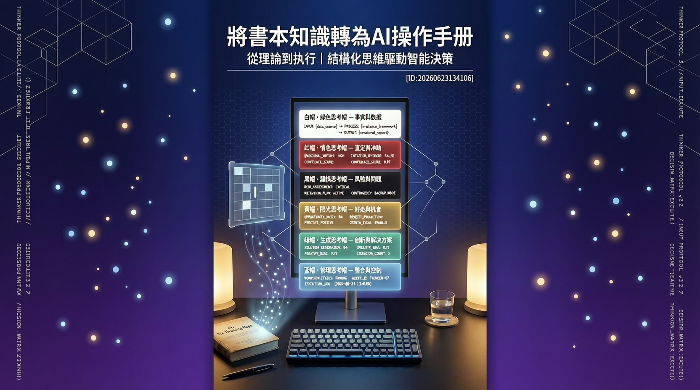

針對現代學習者面臨的記憶衰減與應用斷層，本次報告探討如何將經典思維框架結構化植入人工智慧工作流，實現從靜態閱讀到動態決策的躍進。

在知識迭代呈現指數級增長的數位時代，傳統線性閱讀模式正面臨嚴峻挑戰。數據顯示，多數專業學習者在接觸新資訊後，若缺乏結構化複習與場景演練，知識留存率會在兩週內急遽下滑。研究指出，解決此痛點的核心在於「認知模組化」。透過將經典管理著作《六頂思考帽》的思維路徑拆解，並將其轉譯為AI Agent可執行的Skills檔案，學習者得以建立一套標準化的人機協作協議。
此方法論的核心價值在於釐清思考頻道的邊界。過去面對複雜議題時，大腦往往同時進行事實查核、風險評估與情感判斷，導致認知負載過載。本次專題分析確認，將混合思維切割為獨立運作區塊，能大幅提升決策效率與資訊吸收深度。
將混雜的認知過程拆解為獨立運算頻道，有效降低大腦在多工處理時的資訊摩擦與決策疲勞。
將書面方法論轉寫為AI可讀取的標準化工作流程檔案，確保大型語言模型輸出符合專業邏輯。
透過提示詞工程建立即時推演環境，讓理論框架可直接應用於真實商業與專案決策場景。
明確劃定AI的運算範疇與人類的直覺保留區，確保科技擴充不取代核心價值判斷機制。
聚焦資料蒐集、數據驗證與現況盤點，排除所有主觀臆測，建立決策所需的資訊地基。
提供非邏輯性的第一直覺與情緒反應表達空間，確保方案在執行時符合人性需求。
以嚴謹的防禦性邏輯掃描潛在漏洞、法規衝突與執行障礙，提前佈置避險策略。
主動尋找方案的可行性與長期收益，將挑戰轉化為成長契機，強化執行動能。
跳脫既有框架限制，引入橫向思考與創新工具，針對瓶頸點提出突破性解法。
擔任全局思考的導航系統，規劃思考順序、監控進度並引導團隊產出最終結論。
| 評估維度 | 傳統線性閱讀 | AI 輔助結構化學習 |
|---|---|---|
| 知識留存率 | 偏低（依賴單次碎片化輸入） | 顯著提升（互動式驗證與反覆演練） |
| 實務應用轉化 | 困難（缺乏場景對接機制） | 高效（內建標準化執行腳本） |
| 認知資源負載 | 極高（同步處理多重資訊） | 最佳化（模組化分工卸載負重） |
| 決策盲點覆蓋 | 依賴個人經驗，易有遺漏 | 系統性掃描六維視角 |
未來知識工作的分水線不在於記憶力，而在於將抽象框架轉譯為結構化提示詞的能力。人機協作的終極目標是讓AI擔任思維擴充與情境推演的教練，而人類必須堅守最終價值裁決權。
— 數位學習與人工智慧整合專家觀察將書面知識管理體系轉化為AI Agent的專屬Skills檔案，等同為生成式模型植入專業工作手冊。即便缺乏專屬Agent部署環境，使用者亦可透過大型語言模型的系統提示詞設定，將此架構直接套用，實現無縫接軌的個人化知識管理革命。
綜合本次分析，知識經濟的競爭優勢將持續向「結構化轉譯能力」傾斜。學習者若能掌握將經典理論模組化並導入AI輔助系統的方法，不僅能突破資訊過載的困境，更能建立具備自我迭代能力的決策中樞。產業界預期，隨著生成式模型理解力的深化，此類人機協作協議將成為標準化的職場軟實力。